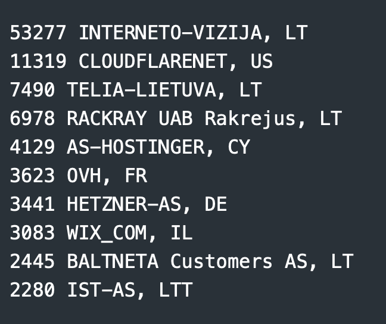
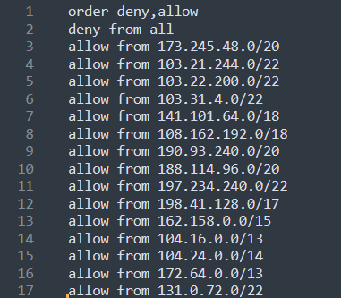
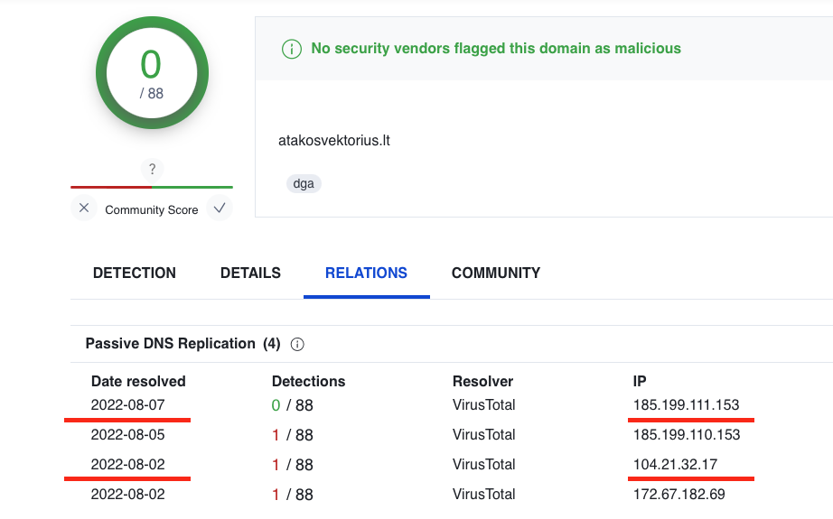
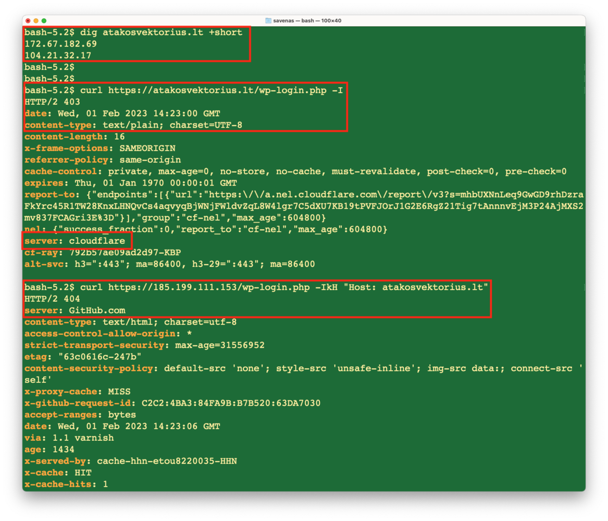
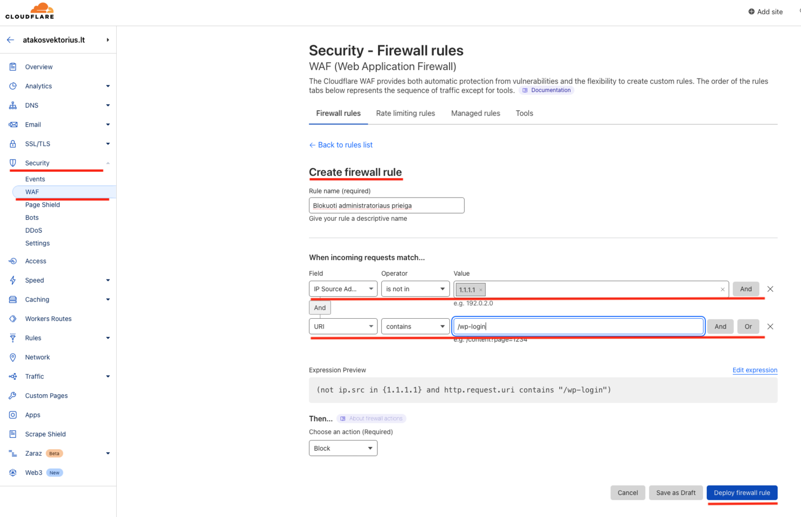
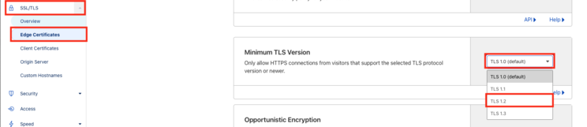
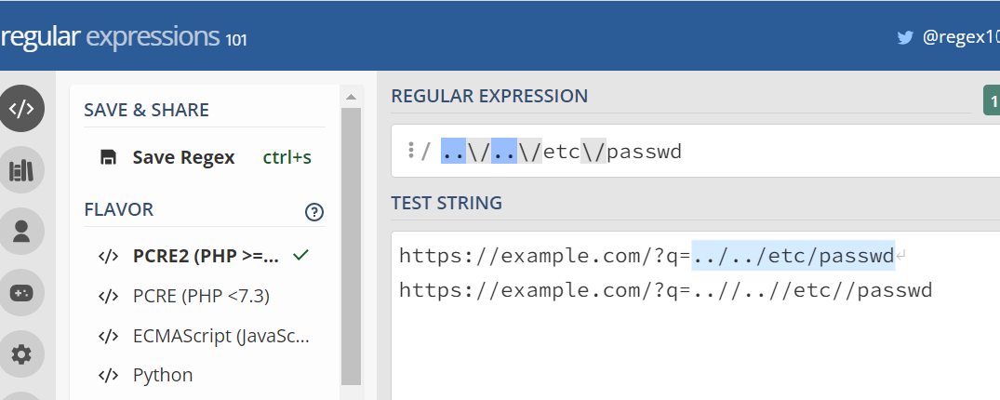

Nors administratoriaus slaptažodis ir bus sudėtingas, tačiau spėliojimas yra nereikalinga grėsmė, kurią galimą lengvai užkardanti. Tai galima padaryti paslaugų tiekėjo nustatymuose. Žinoma jie gali skirtis, o kai kurie tiekėjai turi papildomos apsaugos priemonių, taigi apžvelkime tiekėjus.
Tyrimas
Norime pasiūlyti rekomendacijas, tam mes atlikome tyrimą suprasti kaip talpinamos Lietuvos interneto svetainės. Peržiūrėjome maždaug turimų 120,000 domenų su lt galūnę ir žemiau pateikiame dešimtuką paslaugų tiekėjų:

Sprendimas
Kaip matome didžioji dalis yra prieglobos tiekėjai, o kito tyrimo metu sužinojome dažniausiai sutinkama Apache paslauga. Todėl apriboti prieigą galime per .htacces failą, čia rasite instrukcijas, kurias sudarė IV [2].Toliau sąraše matome Cloudflare, tai yra viena populiariausių interneto svetainių apsaugos priemonių rinkoje. Tai lyg skydas priešais svetainės serverį, kuris naudoja Reverse Proxy technologiją atlikti šias pagrindines funkcijas:
- Anti-DDoS | paslepiamas pirminis serveris ir sulaikomi kenksmingi paketai;
- CDN | sparčiau užkraunami statiniai failai;
- WAF | kenksmingo kodo filtras ir prieigos kontrolė;
- Bot fight | interneto robotų prevencija.

Nors Cloudflare populiari, tačiau ne visi išnaudoja šios apsaugos potencialą. Toliau aptarsime plačiau neapankamos saugumo konfigūracijos sprendimus siejamus su šią paslauga.
Trys žingsniai
Nors DDoS L3/4 apsauga veikia automatiškai, tačiau dauguma kitų priemonių skirtų apsaugoti HTTP protokolo lygyje neįjungta, tai atlikti turime patys. Žemiau pateikiami trys pagrindiniai žingsniai, kuriuos reikia atlikti po DNS nukreipimo į Cloudflare.
Prieinamas pirminis serveris
Reikia apriboti pirminio serverio prieiga per ugniasienę ar paslaugos tiekėją. Leiskite Cloudflare edge serverių IP adresus: [3], o visą kitą srautą uždrauskite.

Tai galioja nepriklausomai ar tai Cloudflare ar kitas "Reverse Proxy". To nepadarius paliekama galimybė apeiti apsaugą, o tai padaryti galima nesunkiai rankiniu būdu nukreipti HTTP srautą radus IP adresą DNS istorijoje.

Žemiau matome rezultatą HTTP 403, kai kreipiamas į administratoriaus nuorodą, o tada rankiniu būdu nukreipiama HTTP užklausą ir jį nėra blokuojama.

Administratoriaus valdymo pultas
Kaip anksčiau aptarėme dėl prieigos iš tam tikrų IP adresų prie "/wp-login" ar "/administrator" reikia riboti. Taigi Cloudflare saugumo savitarnoje prie WAF reikia sukurti prieigos valdymo taisyklę iš dviejų sąlygų:
- Jeigu tai ne mūsų IP adresas ir URI turi administratoriaus nuorodą tuomet blokuoti.

Minimali TLS versija
Nors TLS 1.0 ir 1.1 konfigūracija jau nėra laikoma saugia ir naršyklių palaikančių jau praktiškai nebeliko, tačiau Cloudflare vis dar palieka įjungta, Jeigu jūsų klientai pat pat nenaudoja minėtų versijų, tuomet Cloudflare saugumo savitarnoje reikia pakeisti minimalią iš TLS 1.0 į TLS 1.2. Reikėtų pastebėti tai, kad PCI-DSS atiktis reikalauja ne mažesnės negu TLS 1.2.

Taigi tai buvo trys pagrindinės netinkamos saugumo konfigūracijos problemos.
Kita
Žemiau išvardintoms priemonėms naudoti reikalingas tinkamas pasiruošimas. Priešingu atveju priemones sukels nepatogumu ir užims laiko, dažnu atveju reikia tvarkyti "False Positive" pranešimus.
Jos gali padaryt žalos įprastų naudotojų užklausoms, pavyzdžiui klientui gali būti sutrukdyta apsipirkti. Po kelių bandymų jam gali dingti kantrybė, o jus prarasite dalį pajamų.
Reikia įvertinti kylančių grėsmių lygį ir pritaikyti tik tam tikras taisykles ar funkcijas, būtų geriau jeigu galima užtaisyti spragas programiniame kode ar sistemos konfigūracijoje.
Interneto robotai
Daugiau nei pusė viso interneto srauto sudaro šie automatizuoti instrukcijų rinkiniai, kuriems nereikia intensyvių skaičiavimo resursų [4]. Robotai gal atlikti pažeidžiamumų skenavimus, spėlioti esamus prisijungimus, registruoti naujus vartotojus, ar tiesiog varginti informacinę sistemą. Įprastai interneto robotai nevykdo naršyklėms būdingų JavaScript funkcijų.
Cloudflare siūlo naudoti "Bot Fight Mode", tačiau ši technologija yra sudėtinga, "Reverse Proxy" infrastruktūra yra paskirstyta, o HTTP užklausos gali būti asinchroninės ir lygiagrečios. Šią funkciją geriau naudoti tik tam tikroms nuorodoms ar sąlygoms, o ne visai TVS.
Reikėtų pastebėti tai, kad yra galimybė apeiti "Bot Fight Mode" apsaugą su "begalve" naršyklė, kuri įvykdys JS kodą ir atliks tolimesnius veiksmus.
OWASP WAF taisyklės
WAF sprendimai taip pat yra komplikuoti, dėl "Look Behind" ir "Look Ahead" funkcijų, kurias leidžią sudaryti PCRE reguliariųjų užklausų variklis. Nors WAF gali padėti apsisaugoti nuo SQLi, XSS, LFI ir kitų injekcijų, tačiau reikia atsargumo dėl dviejų priežasčių:
- Gali būti klaidingai užblokuos klientų užklausos. Sesijos duomenims perduoti tinklu aplikacija naudoja atsitiktinius simbolius, kurie kartais kaip žvaigždės susilygiuoja į reikšmingą seką, kuri identifikuojama kaip kenksminga. Siūlome pradėti nuo stebėjimo režimo: "Simulate" arba "Alert only", su sąlyga, kad jos tinka pagal grėsmės lygį. Taip lengviau bus suvaldyti situaciją, nes "Alert only" režimas gali sukelti kitą problemą.
- Gali vėlinti užklausų atsakymo laiką. Nors tai nėra blokavimo režimas, tačiau srautas teka per WAF sluoksnį, todėl reikia įvertinti tai, kad užklausa užtruks apdoroti. Cloudflare dabar naudoja RE2 variklį, kuris yra labai greitas ir neturi rekursijų. Nors iki 2019 metų naudojo PCRE, po vieno nesėkmingo pakeitimo, kuris sukėlė DoS [6]. Kiti WAF sprendimai naudoja PCRE ir jiems galiotų šis pažeidžiamumas.
Taigi prie WAF apsaugos reikės praleisti nemažai laiko, ir ko gero papildomas žmogus turėtų stebėti ir analizuoti srautą nuolat. Taip pat reikėtų turėti omenyje, kad reguliariąsias užklausas galima apeiti, taip pat ir taisykles. Žinant tai nereikia bandyti aprėpti kiek įmanoma platesnį scenarijų, nes taisyklės taps sudėtingos.
